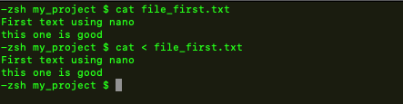

command < file
this is much less common to use because unix usually automatically does this
for instance
cat file
is similar to
cat < file
the difference is subtle but the output is the same in this instance
Good Example
we can sort a list using the above method and then output it to a new file
sort < file > new file
in this instance we could also just do
sort people.txt > sorted_people.txt

important note
most unix commands use this command < file format automatically
but some don't
examples of this
- Email
mail -s "subject" somone@nowhere.com < msg_File
- mySql
mysql -u user -p database < db_backup.sql